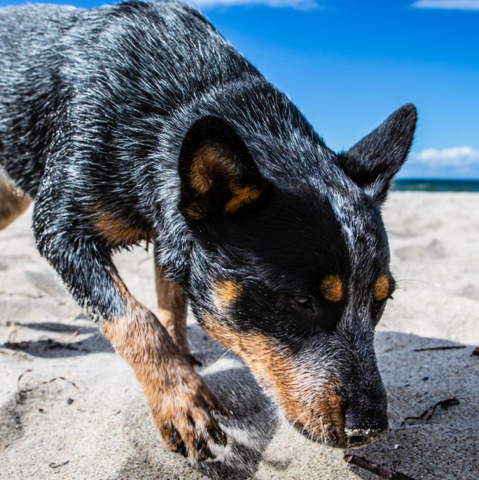

Ausztrál pásztorkutya
Ez az ötödik kontinensről származó terelőkutya Európában is számos kedvelőnek örvend. De ez nem is csoda: az ausztrál pásztorkutya (australian cattle dog) nem csupán színes, szemet gyönyörködtető látvány, emellett sportos szellem és egyedülálló tulajdonságok is jellemzik. Potenciális tartója legyen mozgásbarát, s tudja becsülni a kutya önállóságát.
Kinézete
A közepes méretű kutya sportos-kompakt testalkatú, a nagyobb hímek akár 51 cm-es marmagasságot is elérhetnek. Felfelé álló fülei széles koponyán helyezkednek el. Az australian cattle dog sűrű aljszőrzettel bír, rövid fedőszőrzete lehet kék vagy vörös pettyes, s mindig láthatók benne világos-vöröses-barnás foltok. A kölykök még fehér-foltosan születnek, később aztán egyre több pötty jelenik meg bundájukban. A fajta megjelenése harmonikus összképet nyújt, s erőt valamint dinamikát sugároz.
Az ausztrál pásztorkutya története
Amilyen tarka az ausztrál pásztorkutya kinézete, olyan színes és sokoldalú őseinek galériája is. Hiszen többféle, európai bevándorlókkal Ausztráliába érkezett kutyából adódik össze. Ezek az energikus kutyák a farmereknek segítkeztek a nagy marhacsordák mellett: a kontinens nagy távolságain terelték őket. Ezen pásztorkutyák elődei vélhetően a mai bobtail-ekhez voltak hasonlatosak, de a hosszú szőr inkább hátrányos volt az ausztrál klímaviszonyokhoz.
Az ausztrál pásztorkutya-tenyésztés úttörőjének Thomas Simpson Hall számít, aki a XIX. században nemcsak szarv nélküli marhákat importált Nagy-Britanniából – és sikeresen tenyésztette is azokat -, hanem egy kutyatenyészetet is felépített. Ehhez pettyes munkakutyákat – ún. drover dog-okat – használt, valamint szelídített dingókat. Az eredmény – ahogyan ő nevezte, a „Hall's heeler“ nagyon sikeres terelőkutya volt.
Hall's halála után más kutyákkal is keresztezésre kerültek ezek a négylábúak , így többek között az ausztrál kelpie-vel – nem utolsósorban a harmonikus kinézet elérésére, hiszen maga a „heeler“ lénye tulajdonképpen megfelelt sok, nagy marhacsordát tartó farmer kívánságainak, hisz a szorgos négylábúak nagyszerű szolgálatot nyújtottak. Ezen keresztezések nyomán alakult ki végül a modern „australian cattle dog“, mint kiváló terelőkutya. Az első fajtaszabvány 1903-ban jelent meg, majd azt követően egyre inkább szétvált a munka-- és kiállítási kutya vonal.
Az ausztrál pásztorkutya jelleme
Nagyszerű terelőkutyaként bátorság és kitartás jellemzi az ausztrál pásztorkutyát. De hogyan is állunk kísérőkutyának való alkalmasságával? Ez a csinos, csupa erő kutya ezen a téren is tud néhány dolgot felmutatni: okos, tanulékony, falkájával lojális. Mivel igazából őrzőkutya, idegenekkel szemben inkább távolságtartó. Ez a mutatós ausztrál kiváló őrzőkutya-adottságokkal bír, és nagyszerű kíséretet nyújthat sportos aktivitásokhoz. Mindazonáltal meglehetősen sarkos, karakteres jószág, mondhatnánk, igazi jellem. Mert hogy terelőkutyaként hozzászokott az önálló munkához, így azután hajlamos arra, hogy akaratát keresztülvigye.
Ennek a kutyának rendkívül fontos a rangsor és abban való helye. Egy fair falkavezérnek szívesen alárendeli magát, s azután nagyon lojális és rendkívül kötődik gazdájához. Elképzelhető, hogy egy családban élő australian cattle dog egyetlen személyt választ ki igazán, s ahhoz tartozónak érzi magát. Emellett – főleg a hímek – hajlamosak arra, hogy más kutyákkal szemben türelmetlen magatartást tanúsítsanak.